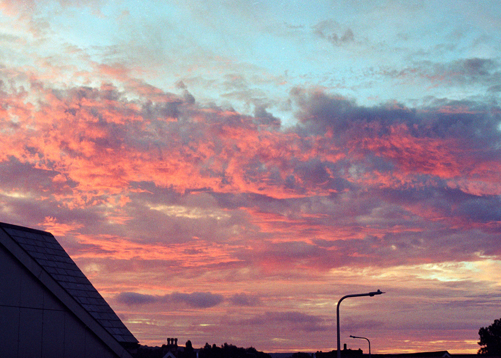
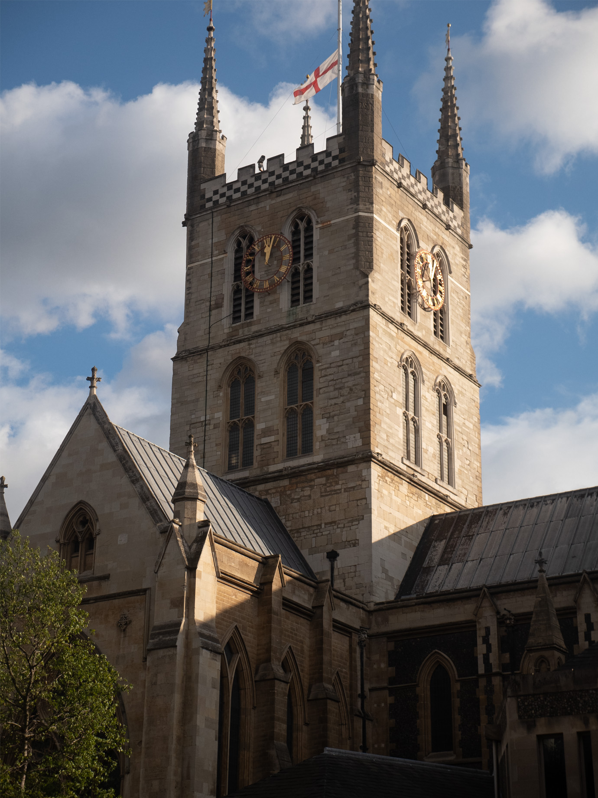

Rose
Rose Cat
Cat Hydrangeas
Hydrangeas Purple Cave
Purple Cave Red Cave
Red Cave Pigeon
Pigeon Barangay Hall
Barangay Hall Street
Street Van
Van Gallery
Gallery Lake
Lake

Sky
Clevedon, Somerset, England, Canon AE1, Canon 50mm 1:1.8, Kodak Colorplus 200.
Sky Sea
Sea Dam
Dam Cheddar Shop
Cheddar Shop Cheddar House
Cheddar House Cheddar Street
Cheddar Street Strawberry
Strawberry Cave
Cave Sea
Sea Boat
Boat Street Wires
Street Wires Car
Car Castle
Castle Palace
Palace Viaduct
Viaduct

Cathedral
Southwark Cathedral, London, England, Lumix GH5s, G X Vario 12-35mm 1:2.8.
Cathedral Dam alt
Dam alt